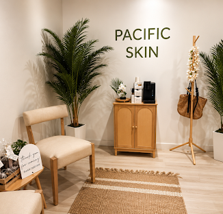

Pacific
Skin
About
A simple customer-facing home for Pacific Skin within Bothell Suites: enough identity and practical information to discover, locate and book the business.
HoursHours provided by business
Address17624 15th Ave SE, Suite D
Bothell, WA 98012
Bothell, WA 98012
BookingDirect booking link
WebsiteBusiness website / social


Demo CMS concept: authenticated owners can edit copy, hours, links, imagery and image focal position directly on this page.